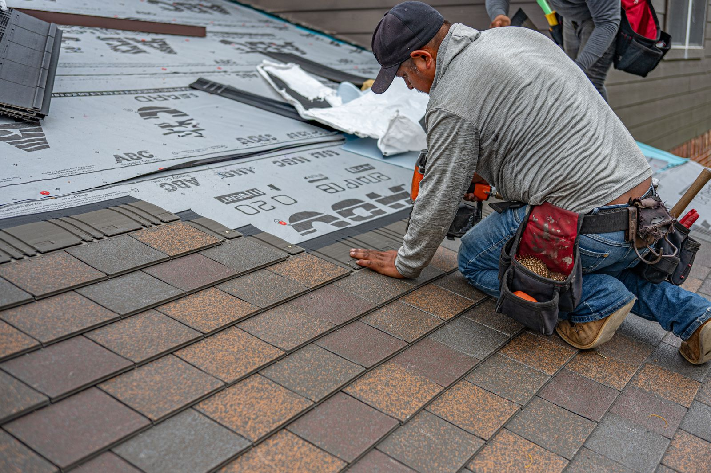

Illustrative stock photo (Pexels, photographer Ryan Stephens, “Professional Roofing Installation in Allen, Texas”) — not a photo of BCS Roofing, its crew, or an actual BCS job site.
Owner-operated roofing · Franklin, Texas
BCS Roofing
A small, home-based roofing company out of Franklin, serving families in Bryan and College Station — the kind of outfit where the person who quotes the job is the one who shows up to do it.
3095 Stonewood Dr, Franklin, TX 77856
About BCS Roofing
A one-crew roofing company built around Mike
BCS Roofing is a home-based roofing company operating out of Franklin, a small town north of Bryan & College Station, and serving homeowners across that area. It's a small operation by design: when you call, you're talking to the person whose name is on the truck — not a call center reading from a script.
Business details on this page come from BCS Roofing's public Google Business listing, verified August 30, 2026.
What we cover
Services
Every roofing outfit has its own focus — the list below covers the work a residential roofing contractor like BCS Roofing typically takes on. Confirm your exact job when you call.
-
Roof Replacement
Full tear-off and re-roof when patching isn't enough anymore.
-
Roof Repair & Leak Fixes
Tracking down a leak before it becomes a ceiling problem.
-
Storm & Hail Damage
Assessments and repairs after a Central Texas storm rolls through.
-
Wood & Decking Repair
Rotten fascia, soffit, or decking replaced before it's a bigger job.
-
Shingle & Composition Roofing
The most common residential roof type in the area, installed right.
-
Roof Inspections & Estimates
A real look at the roof before you decide anything.
Service categories above are generic examples of what a residential roofing contractor typically offers — not a confirmed BCS Roofing service list. Confirm your exact job when you call (979) 589-7663.
How it works
How a job with BCS goes
-
01
Call or text
Tell us what's going on with the roof and get a time set to come look.
-
02
On-site estimate
A real look at the roof, with a plain-English walkthrough of what's needed.
-
03
The work
Repair, patch, or full tear-off and replacement — scheduled and done.
-
04
Walkthrough
A final look together before the job gets called finished.
This is the general shape of how most owner-operated roofing jobs go — confirm BCS Roofing's exact process when you call.
Where we work
Based in Franklin, working the wider area
BCS Roofing is home-based in Franklin, a small town roughly 25–30 minutes north of Bryan and College Station, and takes on roofing jobs across that area.
- Franklin, TX home base
- Bryan, TX
- College Station, TX
Reviews
What customers say
Real reviews from real customers will appear here once connected. We'll show exactly what people have said on Google — nothing invented, nothing edited.
Google reviews will appear here once connected.
See us on Google4.9 rating · 57 reviews, as shown on BCS Roofing's public Google listing — verified August 30, 2026.
Get in touch
Where & when
Hours
Call or message for hours
BCS Roofing's Google listing doesn't publish set hours as of this writing. A quick call is the surest way to reach Mike directly.
Got a roof that needs a look?
Call and describe what's going on — Mike will tell you straight what it'll take, before any work starts.
Call now: (979) 589-7663